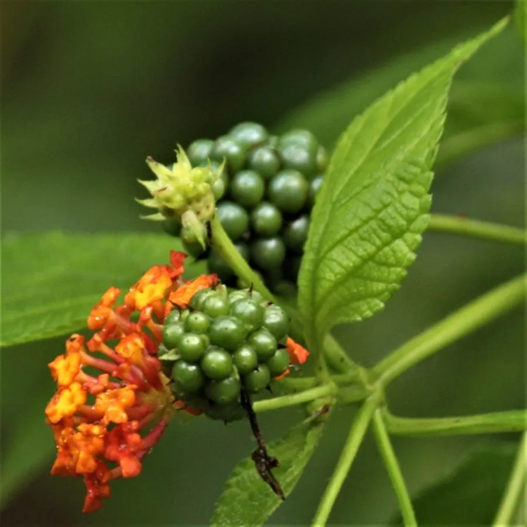

花卉与草本 · 植物界
马缨丹 Lantana camara

马鞭草科马缨丹属灌木状草本，同一花序上花朵由黄变红、五色斑斓，但全株有毒且繁殖力强，被列为入侵植物。
- 分类
- 门被子植物门纲木兰纲目唇形目科马鞭草科属马缨丹属
- 栖息环境
- 路旁、荒地与林缘，喜光耐旱、繁殖力极强
- 地理分布
- 原产热带美洲；中国广东、广西、福建、海南、云南、台湾等地逸生
- 保护级别
- 暂无评估；被列为全球百大入侵物种之一，野外需控制扩散
物种志
马缨丹为马鞭草科马缨丹属灌木状草本或半灌木，高可达一到两米，茎四棱，被倒钩状皮刺。叶片对生，卵形，边缘有锯齿，表面粗糙、揉碎后有强烈气味。花组成头状花序，花冠管状、先端五裂，初开时黄色或橙色，后渐变为红色或紫红色，同一花序上颜色参差，花期全年；核果球形，成熟时紫黑色，果期秋冬季。
马缨丹原产热带美洲，中国广东、广西、福建、海南、云南、台湾等地常见，常逸生于路旁、荒地和林缘。它喜光、耐旱、耐瘠薄，繁殖力极强，被世界自然保护联盟列为全球百大入侵物种之一。花五色斑斓、花期长，可用于庭院观赏，但全株有毒，果实误食可致中毒；在野外应控制其扩散，避免侵占本土植被。
形态与习性
- 株高1–2 m，茎有倒钩刺
- 花期全年，花序颜色渐变
- 果期秋冬季，核果紫黑色
- 光照极喜光，耐全日照
- 水分耐旱，忌积水
- 土壤适应性强，耐瘠薄
- 主要用途庭院观赏，野外需控制扩散
趣味知识
- 马缨丹同一花序上的花由黄变红，因开放先后不同而呈现五色，故称五色梅。
- 它的茎上长有倒钩状皮刺，野外穿行时容易划伤皮肤。
- 马缨丹被列为全球百大入侵物种，在热带地区常排挤本土植物。